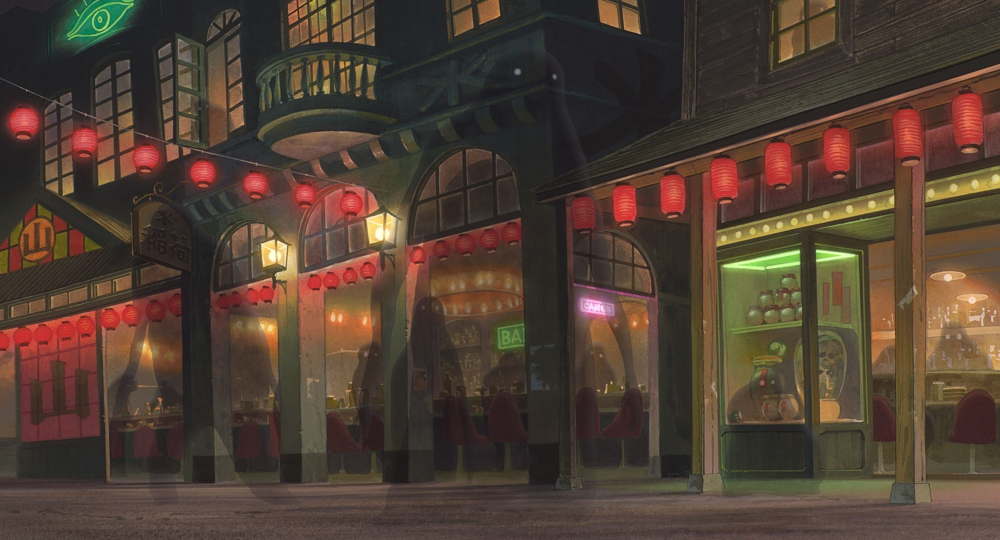
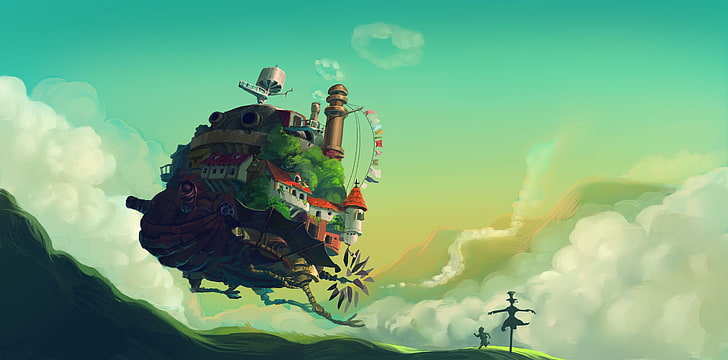
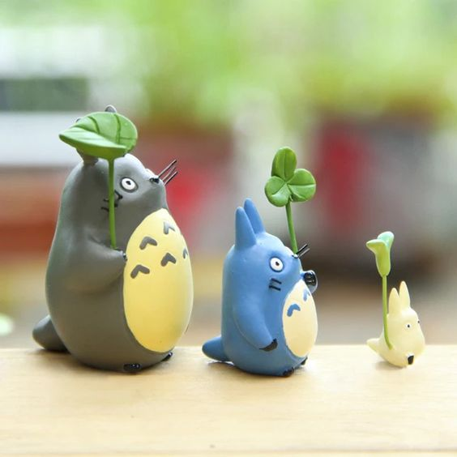

Ilustración
El estilo de ilustración de Studio Ghibli se caracteriza por su delicadeza y detalle, transmitiendo un sentido de magia y nostalgia. Las paletas de colores suaves, los escenarios naturales exuberantes, y los personajes de trazos simples pero expresivos crean un mundo donde lo cotidiano y lo fantástico se entrelazan.

La belleza de sus ilustraciones reside en la capacidad de capturar emociones profundas a través de escenas tranquilas y poéticas, evocando un sentimiento de asombro y ternura que conecta directamente con la audiencia.
El estilo de Studio Ghibli se caracteriza por su atención al detalle y una profunda conexión con la naturaleza. Los fondos suelen ser pintados a mano, llenos de paisajes exuberantes y colores vivos, lo que otorga a las escenas una sensación de vida y serenidad.
 Además, los entornos se sienten "vivos", con pequeños detalles que enriquecen la experiencia, como hojas que caen o agua que fluye suavemente. La dualidad entre lo humano y lo natural está presente, con una narración visual que promueve la armonía y la conexión con el entorno.
Animación
La animación de Studio Ghibli es conocida por su fluidez y atención al movimiento natural, lo que le da una sensación de realismo que distingue a sus películas. Usan una mezcla de animación tradicional a mano y técnicas digitales discretas para lograr una transición suave entre lo mundano y lo mágico. Los detalles minuciosos, como el viento moviendo el cabello o el agua fluyendo, enriquecen la experiencia visual, haciendo que incluso los momentos más sencillos sean emocionalmente impactantes.

Historias
Las historias de Studio Ghibli suelen estar profundamente conectadas con las emociones humanas y presentan personajes que experimentan un viaje de autodescubrimiento. Un aspecto notable es su habilidad para combinar lo ordinario con lo fantástico, donde la magia y la realidad coexisten sin esfuerzo. Los protagonistas suelen ser jóvenes que enfrentan desafíos extraordinarios, pero con un enfoque que no glorifica la lucha o la violencia, sino que resalta el crecimiento personal, la empatía y la colaboración. En este sentido, las narrativas de Ghibli tienden a ser más introspectivas que convencionales.
Otro rasgo característico es la complejidad moral en sus historias. A diferencia de las narrativas tradicionales de "bueno contra malo", en Ghibli, los villanos no siempre son completamente malvados y los héroes no son invulnerables. Los personajes a menudo enfrentan dilemas morales que reflejan la ambigüedad de la vida real, permitiendo que los espectadores exploren matices en lugar de respuestas fáciles. Este enfoque profundo genera una conexión emocional con el público, ya que las historias no solo entretienen, sino que invitan a la reflexión sobre el entorno, las decisiones y las relaciones.
Finalmente, muchas de sus historias tienen un fuerte mensaje ecológico y social. Películas como Nausicaä del Valle del Viento y La Princesa Mononoke exploran la relación entre el hombre y la naturaleza, cuestionando la explotación de los recursos naturales y las consecuencias del desequilibrio. Al mismo tiempo, otras historias tocan temas más íntimos, como el valor de la amistad, el poder de la imaginación, y el proceso de madurar. A través de este enfoque en temas universales y personajes complejos, las películas de Ghibli logran resonar con audiencias de todas las edades y culturas.
Personajes
Sin duda tiene los personajes más adorables y reconocibles.
